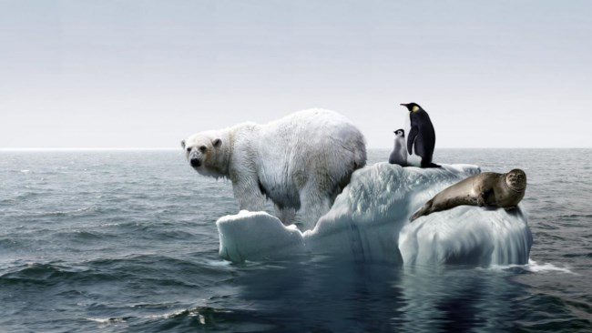

El calentamiento global es el aumento a largo plazo de la temperatura media del sistema climático de la Tierra. Es un aspecto primordial del cambio climático actual, demostrado por la medición directa de la temperatura y de varios efectos del calentamiento. Los términos calentamiento global y cambio climático a menudo se usan indistintamente, pero de forma más precisa calentamiento global es el incremento global en las temperaturas de superficie y su aumento proyectado causado predominantemente por actividades humanas (antrópico), mientras que cambio climático incluye tanto el calentamiento global como sus efectos en el clima. Si bien ha habido periodos prehistóricos de calentamiento global, varios de los cambios observados desde mediados del siglo XX no han tenido precedentes desde décadas a milenios. En 2013, el Quinto Informe de Evaluación (AR5) del Grupo Intergubernamental de Expertos sobre el Cambio Climático (IPCC) concluyó que «es extremadamente probable que la influencia humana ha sido la causa dominante del calentamiento observado desde la mitad del siglo xx». La mayor influencia humana ha sido la emisión de gases de efecto invernadero como el dióxido de carbono, metano y óxidos de nitrógeno. Las proyecciones de modelos climáticos resumidos en el AR5 indicaron que durante el presente siglo la temperatura superficial global subirá probablemente 0,3 a 1,7 °C para su escenario de emisiones más bajas usando mitigación estricta y 2,6 a 4,8 °C para las mayores. Estas conclusiones han sido respaldadas por las academias nacionales de ciencia de los principales países industrializados y no son disputadas por ninguna organización científica de prestigio nacional o internacional. El cambio climático futuro y los impactos asociados serán distintos en una región a otra alrededor del globo. Los efectos anticipados incluyen un aumento en las temperaturas globales, una subida en el nivel del mar, un cambio en los patrones de las precipitaciones y una expansión de los desiertos subtropicales. Se espera que el calentamiento sea mayor en la tierra que en los océanos y que el más acentuado suceda en el Ártico, con el continuo retroceso de los glaciares, el permafrost y la banquisa. Otros efectos probables incluyen fenómenos meteorológicos extremos más frecuentes, tales como olas de calor, sequías, lluvias torrenciales y fuertes nevadas; acidificación del océano y extinción de especies debido a regímenes de temperatura cambiantes. Entre sus impactos humanos significativos se incluye la amenaza a la seguridad alimentaria por la disminución del rendimiento de las cosechas y la pérdida de hábitat por inundación. Debido a que el sistema climático tiene una gran inercia y los gases de efecto invernadero continuarán en la atmósfera por largo tiempo, muchos de estos efectos persistirán no solo durante décadas o siglos, sino por decenas de miles de años.